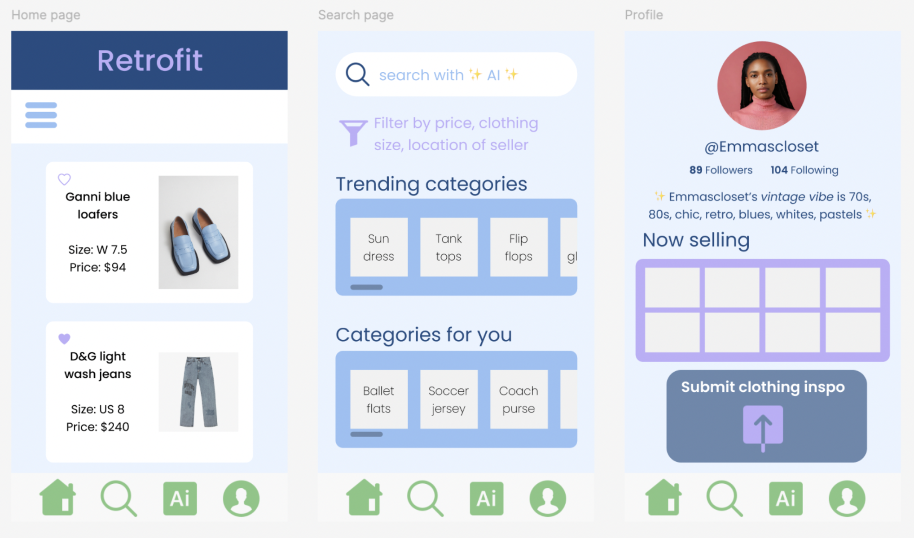
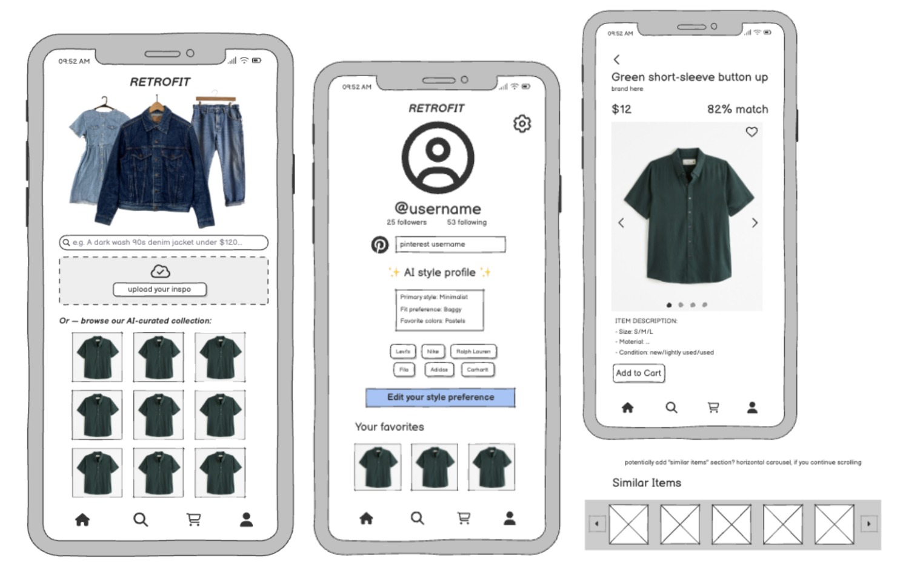

ITERATIVE DESIGN
Background
For this group project, we created potential designs (lo-fi and hi-fi mockups) for a fashion startup, Retrofit.
As the vintage and secondhand market grows, its online marketplace has become more overwhelming. Retrofit's solution is an AI-curated vintage marketplace, which uses social media trends, sales data, and a user's style to personalize a user's shopping experience and recommend a curated inventory. We used an iterative design process to design, get feedback on, and redesign an interactive mobile prototype for Retrofit.
My aims for this project were to:
- Learn to ideate and work collaboratively with a team
- Learn how to iterate from sketches to high-fidelity prototypes and incorporate feedback
- Solve a design problem with a high-fidelity, interactive prototype and learn to evaluate it
Design Process
We began by each creating sketches of different screens for our application. For my design, I chose to go for a colorful, eye-catching design for 3 different pages - a home page, search page, and profile page. My design is shown below:
After discussing our original sketches between the group, we moved on to wireframing.
We decided to create mock-ups for a mobile application instead
of a desktop version because we felt it aligned more closely
with the needs of our target audience - young people and
shoppers, who often prefer to browse and scroll on their phones.
In our wireframes, we wanted to reflect a design that is both
convenient and user-friendly.
Next, we combined aspects from all our sketches to create
wireframes that emphasized AI-curation and were simple and
intuitive. I mainly focused on creating the user profile page.
Points of focus:
- Chatbot-like search prompt on the home page
- Intuitive grid layout for images Clothing rack on the home page
- Image carousel for single item page AI-style profile emphasis on profile page
Here is the wireframe:
Here is a link to a Loom video detailing the thought process behind our wireframe. After creating this lo-fi wireframe, we received feedback on it from a TA, which helped us identify what was missing, what was confusing, and what could be improved - all of which would help us create our next iteration.
Feedback received:
- Make the distinction between what is shown publicly on the profile page vs. what isn't more clear.
- Add an info icon next to the match percentage of an item that explains what it means for a product to be a match.
- Create a feature that allows users to be taken to a brand’s page or link when they click on the brand.
- Emphasize curation and provide more guidance to users on the home page (the home page is confusing and users might not know how to proceed).
- Change wording to “browse *your* AI curated selection”, so users understand it is curated specifically for them.
From this feedback, we then used Figma to design a hi-fi prototype, and made the following changes to our original design:
- Added checkout, search results, and brand specific screens
- Created add to cart and percent match informational popups
- Added private/public distinction to profile page
- Changed grid on home page to sectioned recommendations
Here is a snapshot of our Figma designs:

Here is the link to our full interactive Figma prototype. You can also view a Loom video here demonstrating our interface and our thought process.
User Testing
To test our design with potential users, we asked people to complete the following task: search for an item and purchase it, completing the checkout process.
These are the necessary steps to complete the task:
- Select the search bar or icon
- Type query (keyboard not prototyped) and press enter. Click item.
- Click “Add to cart”.
- Click “Go to cart”.
- Click “Go to checkout”.
- Review details and click “Confirm and pay”.
Testing results
Errors users made
- Reselecting the search bar once prompted to search. This was due to the keyboard popup being incomplete, so they were unaware that they were already able to search.
- Multiple users attempted to do this.
- There was some confusion about not being able to actually type to search something up.
- One user stuttered at the “Added to Cart” popup because it was more 'in-your-face' than other apps they had experience with.
General results
- Users found the interface very intuitive due to its similarity to other shopping interfaces.
- Users were able to easily find the correct buttons/interactive components to press to work through the task.
Potential interface changes
- Adding a keyboard to the prototype would ensure users are aware they can search.
- Instead of a persistent popup upon adding an item to cart, could have it appear as a less intrusive banner at the top of the app. This would allow the user to continue their shopping momentum instead of being forced to pause and address the popup.
Reflection
Through our iterative design process, we developed an intuitive, user-centric mobile app for Retrofit that addresses the pain points of online vintage shopping - overwhelming inventory and impersonal experiences. By incorporating user feedback as much as possible, we created an interface that effectively integrates AI-curation into a seamless browsing and purchasing experience. User testing confirmed the success of our design approach, highlighting both strengths and areas for further enhancement. Ultimately, our iterative method allowed us to create a solution that not only meets user expectations but also significantly elevates the convenience and personalization of online vintage shopping.
Personally, I really enjoyed this project, because I love startups - this one was especially cool as I love fashion and shopping - and I love being able to use my creativity. Working in a group was also really fun, and although challenging at times, especially when doing something like design where everyone has such different taste and preferences, it was super fulfilling and I am really happy with the result!